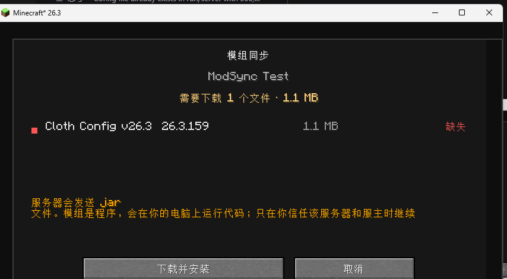
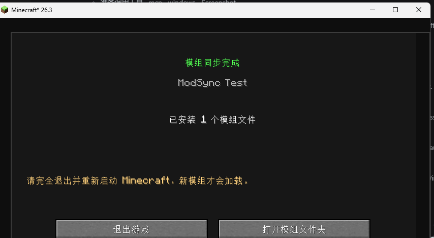
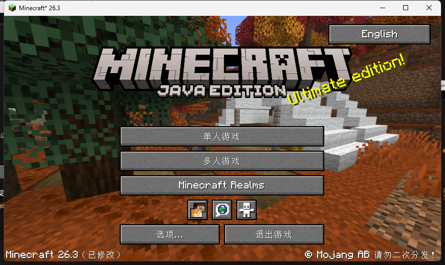

装一个 ModSync
剩下的模组让它自己下。
ModSync 用来解决联机时最烦的情况：房主装了模组，朋友没装；或者版本对不上，进服就报错、被踢、崩溃。 它把房主的模组清单和 jar 交给客户端，校验、备份、安装，然后你只需要重启再进服。
01快速开始#
第一次使用，按这五步走。
最重要的一条：房主/服务端和客户端都要安装 ModSync。只装客户端，服务端不会发清单，同步页面不会出现。
Fabric 用 Fabric 版，Forge 用 Forge 版，NeoForge 用 NeoForge 版。不同加载器的 jar 不能混装。
mods/
注意是“实际启动的那个实例”的 mods 文件夹，不是桌面。Fabric 还需要 Fabric API。
Fabric 不需要额外端口。Forge / NeoForge 会在游戏端口 +1 开 HTTP 同步服务（25566），失败会尝试 8710。
Fabric：直接点“加入服务器”，缺模组时会弹审核界面。Forge / Neo：先在主菜单/多人游戏点 ModSync，选服务器同步。
下载的 jar 不能在当前 JVM 里安全加载，必须重启。旧 jar 会备份到 mods/.modsync-backup/。
先判断你是哪种情况
| 房主 / 服务端 | 客户端 | 结果 |
|---|---|---|
| 没装 | 没装 | 原版流程；模组一致能玩，不一致就 registry sync 报错 |
| 没装 | 装了 | 不会同步 不会弹同步页面；和没装差不多，客户端只是待命 |
| 装了 | 没装 | 不会同步 服务端不会发清单（客户端没声明频道）；客户端无法同步，模组不一致照样被踢 |
| 装了 | 装了 | 可以同步 进服前弹审核界面，能下载/安装/重启 |
02版本与前置#
下载前先确认加载器、Minecraft 版本和 Java。
| 加载器 | Minecraft | Java | 状态 |
|---|---|---|---|
| Fabric | 26.3 | 25 | 已实机验证 |
| Fabric | 26.2 | 25 | 可用 已装进 Modrinth 实例 |
| Fabric | 26.1.2 | 25 | 已构建 |
| Fabric | 26.1.1 | 25 | 已构建 |
| Fabric | 26.1 | 25 | 已构建 |
| Forge | 1.21.1 | 21 | 已构建 |
| Forge | 1.20.1 | 17 | 过渡版 方案 A |
| NeoForge | 1.21.1 / 1.21.11 | 21 | 已构建 |
| NeoForge | 26.1.2 / 26.2 / 26.3 | 25 | 已构建 |
| Fabric | 1.21 / 1.21.1 / 1.21.11 | 21 | 待移植 |
| Forge | 1.21.11 / 26.1.2 / 26.3 | 21 / 25 | 待移植 ForgeGradle 暂不支持 |
版本不能混：26.2 客户端不能连 26.3 服务器；Forge 和 NeoForge 的 jar 也不能互换。服务端和客户端要用同一个加载器、同一个 Minecraft 版本。
Fabric 需要
- Fabric Loader：26.3 用 0.20.1；26.2 用 0.19.5+（推荐 0.20.1）
- Fabric API：26.3 用
0.165.0+26.3；26.2 用0.161.0+26.2；26.1.x 用0.155.3+26.1.2 - Java 25
Forge 需要
- Forge 1.20.1（47.x）
- Java 17
- 不需要 Fabric API
NeoForge 需要
- NeoForge 1.21.1（21.1.x）
- Java 21
- 不需要 Fabric API
03安装总览#
ModSync 是“客户端 + 服务端”都要装的模组。它不能在房主没装的情况下单方面工作。
房主 / 服务端
单人开局域网：把 jar 放进房主客户端 mods/。专用服务器/面板服：上传到服务器 mods/，不是只放自己电脑。
客户端
放进你实际启动的实例的 mods/。PCL、Modrinth App、官方启动器都遵循这一条。
放置位置
官方启动器 / PCL 默认实例：
%APPDATA%\.minecraft\mods
Modrinth App：
%APPDATA%\ModrinthApp\profiles\<实例名>\mods不要解压 jar。直接放进 mods 文件夹。一个实例只放对应加载器、对应版本的 ModSync。
Fabric 安装
版本按下表选择；API 是 ModSync 的硬依赖。
房主和客户端都要放。
日志里应出现 ModSync ready。
| Minecraft | Fabric Loader | Fabric API |
|---|---|---|
| 26.3 | 0.20.1 | 0.165.0+26.3 |
| 26.2 | 0.19.5+ | 0.161.0+26.2 |
Forge / NeoForge 安装
这两个版本是“方案 A”：Forge/NeoForge 在 login 阶段就会检查模组列表，不能像 Fabric 那样“点加入后自动同步”。必须先在主菜单点 ModSync，同步完成、重启，再进服。
需要 Forge 47.x + Java 17。把 Forge 版 jar 放进房主服务端和客户端 mods/。
需要 NeoForge 21.1.x + Java 21。把 NeoForge 版 jar 放进房主服务端和客户端 mods/。
Forge / Neo 的额外端口
房主的 ModSync 会在 游戏端口 + 1 上启动一个小型 HTTP 服务（例如 25565 → 25566）。如果被占用，会尝试 8710。
- 局域网：一般不用额外设置。
- 公网服务器：防火墙/路由器要放行这个 HTTP 端口。
- 面板服：确认允许额外端口；不允许的话只能改用整合包或手动分发包。
04Fabric：进服前自动同步#
Fabric 版的体验最完整：点“加入服务器”后，在服务器发送注册表数据之前，ModSync 先交换清单。
房主和客户端都已装 ModSync + Fabric API。
如果模组完全一致，直接进服，不弹任何界面。
列出缺失/版本不符的模组和大小。
进度界面会出现；完成后提示重启。
不要在下载完成后直接点“重新连接”。

说明：Fabric 版会把自己的配置任务插到 Fabric registry sync 前面，所以不会出现“客户端还没看到同步界面，就先被 unknown registry entries 踢掉”的情况。
05Forge / Neo：先同步，再进服#
Forge/NeoForge 不能在 login 阶段补模组，所以流程是“先在游戏里同步，重启后再加入”。
日志出现 ModSync sync server listening on 0.0.0.0:25566 才算成功。
标题界面右上角，或多人游戏界面右上角。
弹出服务器列表；选中后点“同步选中服务器”。
看到缺失/版本不符后，点“下载并安装”。
同步完成后不要直接点加入。
第一次直接点“加入服务器”会被 Forge 踢：这是正常现象，不是 ModSync 坏了。先用 ModSync 同步。
如果 HTTP 端口连不上
- 确认房主日志里的端口是 25566 还是 8710；
- 公网服务器要放行对应端口；
- 面板服不允许额外端口时，改用 CurseForge 整合包或手动分发包；
- 客户端会依次尝试“游戏端口+1”“8710”“游戏端口+2”。
06界面说明#
ModSync 的界面都使用 Minecraft 原生 Screen，不会弹独立窗口。

状态含义
| 状态 | 含义 | 处理 |
|---|---|---|
| 已同步 | 本地已有相同 id + 版本 | 不需要下载 |
| 缺失 | 本地完全没有这个模组 | 下载 |
| 版本不符 | 有同 id，但版本字符串不同 | 下载服务器版本，旧 jar 备份 |
| 部分缺失 | 一个 jar 里多个模组，部分缺失/版本不对 | 下载整个 jar |
| 可选 | 非必需文件 | 默认不下载 |
按钮
- 下载并安装：开始传输；没有点它就不会下载。
- 取消：断开本次同步，不修改任何文件。
- 退出游戏：同步完成后退出，方便重启。
- 打开模组文件夹：打开当前实例的
mods/。
07语言切换#
Wiki 语言
页面右上角有语言选择器，目前支持 16 种语言：
- 中文、English、日本語、한국어、Deutsch；
- Français、Español、Português、Italiano、Русский；
- Türkçe、Polski、Nederlands、ไทย、Bahasa Indonesia、Tiếng Việt。
选择后页面会重新加载并切换语言。中文和英文为完整内容；其他语言由机器翻译辅助，专有名词和术语可能有偏差，遇到关键步骤请以中文/英文页面为准。
游戏内语言按钮
主菜单右上角有一个语言按钮，点击会弹出一个包含 16 种语言的列表。选中一种后立即切换整个 Minecraft 的语言，ModSync 的游戏内界面也会跟随。

- 游戏内按钮支持 16 种语言，和 Wiki 的语言列表一致；
- 列表里当前语言前面有 ✓；点任意语言立即切换；
- 切换会写入
options.txt，重启后保持； - 这个按钮切换的是整个游戏语言，不只是 ModSync。
08配置文件#
首次启动自动生成：
config/modsync.json{
"server": {
"enabled": true,
"shareClientOnlyMods": true,
"excludeMods": [],
"maxFileSizeMb": 200,
"maxTotalSizeMb": 1024,
"idleTimeoutSeconds": 900
},
"client": {
"enabled": true,
"backup": true,
"maxTotalSizeMb": 1024
}
}| 字段 | 说明 |
|---|---|
server.enabled | 房主是否共享模组。 |
server.shareClientOnlyMods | 是否共享 environment: client 的模组。默认 true。Xaero、QuickShulker 这类模组可能被 registry sync 要求，关掉容易报错。 |
server.syncPort | Forge/Neo 的 HTTP 端口；0 = 游戏端口+1。Fabric 忽略。 |
server.excludeMods | 不共享的 mod id，例如 ["sodium"]。许可证不允许再分发的模组请放这里。 |
server.maxFileSizeMb | 单文件上限。 |
server.maxTotalSizeMb | 单次同步总大小上限。 |
server.idleTimeoutSeconds | 审核界面无操作多久后断开；客户端有 ping，正常不会触发。 |
client.enabled | 客户端是否接受同步。关掉后直接放行。 |
client.backup | 替换旧 jar 前是否备份。 |
client.maxTotalSizeMb | 客户端自己的总大小限制。 |
改完重启。服务端也可以用 /modsync reload 重建清单。如果配置是旧版生成的，把 shareClientOnlyMods 改成 true，或者删掉文件让它重新生成。
09命令#
| 命令 | 权限 | 作用 |
|---|---|---|
/modsync status | 所有人 | 查看共享 jar 数、总大小、HTTP 端口。 |
/modsync list | 所有人 | 列出共享文件名（最多 20 个）。 |
/modsync reload | OP | 重新扫描 mods/ 并生成清单。 |
单人游戏需要开启作弊才能使用命令；服务器需要对应权限等级。
10安全与备份#
模组就是程序。同步模组等于从房主服务器下载并执行代码。只加入你信任的服务器；不要因为“能自动下载”就放松警惕。
客户端做了什么
- 必须手动点“下载并安装”，没有自动安装开关；
- 先写临时目录，SHA-256 校验通过才安装；
- 文件名清洗，只允许写
mods/； - 旧 jar 备份到
mods/.modsync-backup/； - 不自动删除你多出来的模组。
服务端做了什么
- 只读取
mods/下的顶层 jar； - 不共享配置、存档、日志、账号信息；
- 按清单文件名提供文件，不允许路径穿越；
- 有单文件/总大小限制；
- Forge/Neo 的 HTTP 服务默认无密码，公网暴露时请限制来源。
回滚
旧文件在：
mods/.modsync-backup/<时间>/把对应的旧 jar 移回 mods/，删掉新装的同名 jar，重启即可。不要同时保留同一 mod id 的两个 jar。
许可证
只共享许可证允许再分发的模组。ModSync 是传输工具，不绕过付费/授权限制；不确定时把 mod id 加进 server.excludeMods。
11常见问题#
为什么进服直接报“无法识别的注册表项”，没有弹 ModSync 页面？
这说明服务端没有发清单。客户端 ModSync 只能接收，服务端不发就没有页面。
检查房主日志有没有：
Sending ModSync manifest to ...没有的话：房主没装、装的是旧版、装错实例，或者客户端和服务端版本不一致。
截图里的 quickshulker、xaerominimap、xaeroworldmap 是服务端注册表里的模组；房主必须有这些 jar，并且 shareClientOnlyMods 为 true，ModSync 才能共享。
只装客户端可以吗？
不行。自动同步必须房主/服务端和客户端都装。只装一边不会生效，也不会把原本能进的服弄坏（模组一致时照常进）。
只装服务端可以吗？
服务端会启动共享服务，但没有 ModSync 的客户端不会声明频道/不会弹界面，所以不能自动同步。模组一致时仍可正常进服。
Forge / NeoForge 为什么点“加入服务器”就被踢？
Forge/NeoForge 在 login 阶段就检查 mod list，缺模组直接拒绝。必须先在主菜单点 ModSync 同步，重启后再进服。这是“方案 A”的设计，不是 bug。
Forge / NeoForge 提示连不上同步服务？
客户端会尝试 游戏端口+1、8710、游戏端口+2。检查房主日志里的实际端口，确认防火墙/路由器放行；面板服可能不允许额外端口，只能改用整合包或手动分发包。
下载完成后为什么进游戏没变化？
必须完全退出并重启。下载的 jar 不能在当前 JVM 里安全加载，直接“重新连接”不会生效。
旧模组去哪了？怎么恢复？
被替换的 jar 在 mods/.modsync-backup/<时间>/。把旧 jar 移回 mods/，删掉新装的同名文件，重启。
服务端没有的模组，客户端有，会怎样？
ModSync 只补齐“服务端有、客户端缺”。客户端多出来的模组不会自动删除，只会在审核界面提示可能不兼容。纯客户端模组通常没事；内容模组可能导致注册表/网络包问题。
支持 Forge 26.3 / NeoForge 26.3 / Minecraft 1.21.0 吗？
目前还没有。Fabric 26.3 已实机验证；Forge 1.20.1、NeoForge 1.21.1 是过渡版；1.21.0 和 Forge/Neo 26.3 还在移植。版本表里没有的版本，就是还不能直接用。
公共服务器能用吗？
不能单方面用。必须服主在服务端装 ModSync 并允许共享；你作为客户端无法强制公共服务器发清单。可以用整合包或手动安装。
语言按钮在哪里？
主菜单右上角有语言按钮。它切换整个游戏语言，ModSync 界面会跟随；目前支持 16 种语言，和 Wiki 列表一致。
12已知限制#
必须遵守
- 房主和客户端都要装；
- 第一次必须手动装 ModSync；
- 需要重启；
- 版本/加载器必须匹配；
- Forge/Neo 需要额外 HTTP 端口；
- 只同步
mods/下的顶层 jar。
不会做
- 不会自动安装 Fabric/Forge/Neo/Java；
- 不会去 CurseForge/Modrinth 下载；
- 不会删除本地多余模组；
- 不会自动重启游戏；
- 不支持断点续传；
- 不会绕过模组许可证。
一句话总结：ModSync 是“房主把 mods 分享给客人”的工具，不是“客户端单方面破解服务器模组”的工具。两边配合，体验最好。